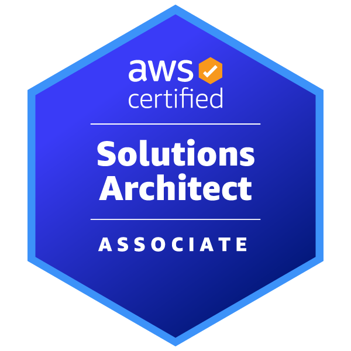
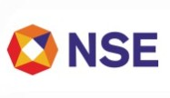
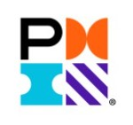
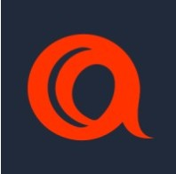

Anirban Sarkar
From Building Software to Shaping AI-Enabled Engineering Systems
Building resilient, scalable and intelligent enterprise systems — connecting technology strategy with engineering execution across financial services, modernization, cloud platforms and AI-enabled engineering.
My Journey
From building software to shaping AI-enabled engineering systems
Over 22+ years, my journey has evolved from building enterprise applications and mission-critical financial systems to shaping solution and enterprise architecture, engineering platforms, and now AI-enabled engineering systems. Today, my focus is on applying AI and intelligent agents across the engineering lifecycle — not just coding, but architecture, modernization, development, testing, technical debt, operations and continuous improvement.
What I Work On
Eight connected dimensions of technology leadership
Architecture
Leadership, governance, principles, standards, reference architectures and decision frameworks.
Explore → 02Platform Engineering
Reusable capabilities, DevSecOps, Kubernetes, Infrastructure-as-Code and self-service engineering.
Explore → 03Financial Services
Mission-critical financial systems, trading workflows, SWIFT, settlement and regulated environments.
Explore → 04Modernization
Cloud, APIs, events, microservices, application transformation and technical-debt reduction.
Explore → 05Reliability
SRE, security, observability, resilience, NFRs and production readiness.
Explore → 06Global Leadership
Technology strategy, cross-functional teams, stakeholder alignment and transformation leadership.
Explore → 07Engineering Effectiveness
DORA, engineering maturity, quality, productivity, technical debt and measurable outcomes.
Explore → 08AI-enabled Engineering
Agentic SDLC, RAG, AI-assisted quality, engineering intelligence and productivity.
Explore →My Technology Journey
My Education
Foundations in engineering, computer science and artificial intelligence
Credentials & Continuous Learning
Certifications and programs across cloud, AI, architecture, delivery and financial markets.

AWS Certified Machine Learning Engineer
Amazon Web Services (AWS)

AWS Certified Solution Architect
Amazon Web Services (AWS)

AWS Enterprise Modernization
Amazon Web Services (AWS)

AWS Migration Acceleration Program
Amazon Web Services (AWS)

Scrum Master
Scrum Alliance

NSE Academy's Certification in Financial Markets
NSE Academy

Microsoft Azure Professional
Microsoft

PMP® Certification Course
Project Management Institute
Certified SAFe® Scrum Master
Scaled Agile, Inc.

PRINCE2 Agile® Foundation & Practitioner
PeopleCert / AXELOS
Selected Impact
Explore Further
Dive deeper into my work, research and thoughts.